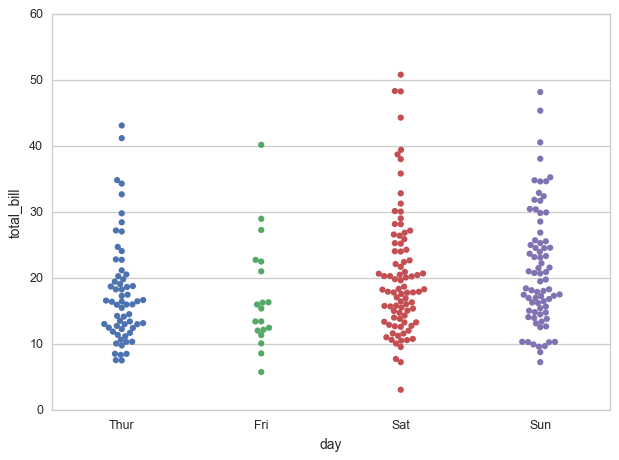
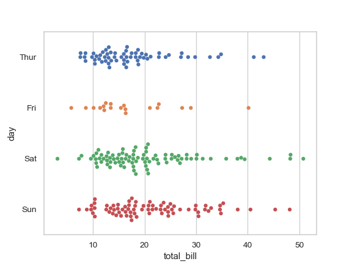
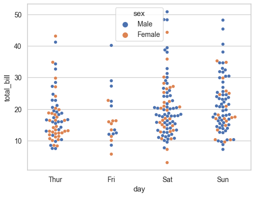
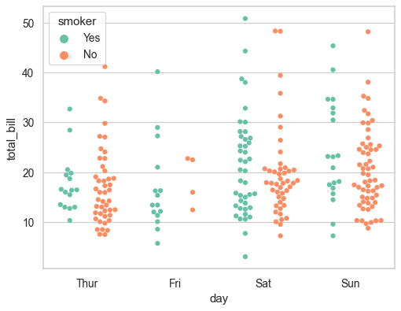
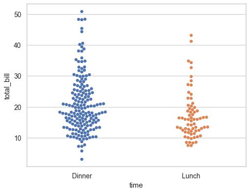
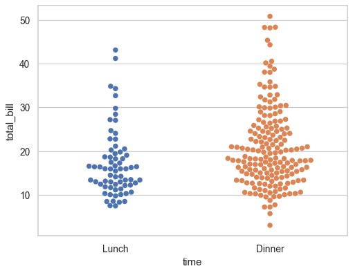
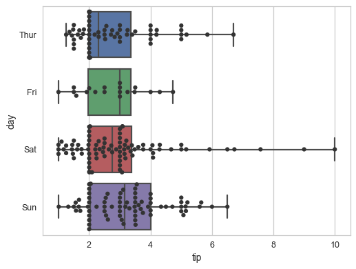
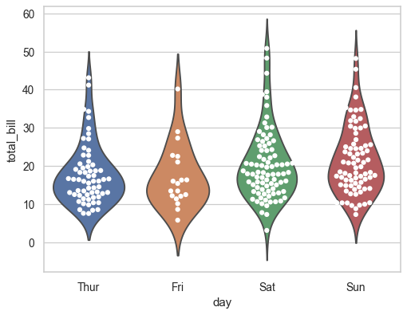

seaborn.swarmplot¶
-
seaborn.swarmplot(x=None, y=None, hue=None, data=None, order=None, hue_order=None, dodge=False, orient=None, color=None, palette=None, size=5, edgecolor='gray', linewidth=0, ax=None, **kwargs)¶ Draw a categorical scatterplot with non-overlapping points.
This function is similar to
stripplot(), but the points are adjusted (only along the categorical axis) so that they don’t overlap. This gives a better representation of the distribution of values, although it does not scale as well to large numbers of observations (both in terms of the ability to show all the points and in terms of the computation needed to arrange them).This style of plot is often called a “beeswarm”.
A swarm plot can be drawn on its own, but it is also a good complement to a box or violin plot in cases where you want to show all observations along with some representation of the underlying distribution.
Note that arranging the points properly requires an accurate transformation between data and point coordinates. This means that non-default axis limits should be set before drawing the swarm plot.
Input data can be passed in a variety of formats, including:
- Vectors of data represented as lists, numpy arrays, or pandas Series
objects passed directly to the
x,y, and/orhueparameters. - A “long-form” DataFrame, in which case the
x,y, andhuevariables will determine how the data are plotted. - A “wide-form” DataFrame, such that each numeric column will be plotted.
- Anything accepted by
plt.boxplot(e.g. a 2d array or list of vectors)
In most cases, it is possible to use numpy or Python objects, but pandas objects are preferable because the associated names will be used to annotate the axes. Additionally, you can use Categorical types for the grouping variables to control the order of plot elements.
Parameters: x, y, hue : names of variables in
dataor vector data, optionalInputs for plotting long-form data. See examples for interpretation.
data : DataFrame, array, or list of arrays, optional
Dataset for plotting. If
xandyare absent, this is interpreted as wide-form. Otherwise it is expected to be long-form.order, hue_order : lists of strings, optional
Order to plot the categorical levels in, otherwise the levels are inferred from the data objects.
split : bool, optional
When using
huenesting, setting this toTruewill separate the strips for different hue levels along the categorical axis. Otherwise, the points for each level will be plotted in one swarm.orient : “v” | “h”, optional
Orientation of the plot (vertical or horizontal). This is usually inferred from the dtype of the input variables, but can be used to specify when the “categorical” variable is a numeric or when plotting wide-form data.
color : matplotlib color, optional
Color for all of the elements, or seed for
light_palette()when using hue nesting.palette : seaborn color palette or dict, optional
Colors to use for the different levels of the
huevariable. Should be something that can be interpreted bycolor_palette(), or a dictionary mapping hue levels to matplotlib colors.size : float, optional
Diameter of the markers, in points. (Although
plt.scatteris used to draw the points, thesizeargument here takes a “normal” markersize and not size^2 likeplt.scatter.edgecolor : matplotlib color, “gray” is special-cased, optional
Color of the lines around each point. If you pass
"gray", the brightness is determined by the color palette used for the body of the points.linewidth : float, optional
Width of the gray lines that frame the plot elements.
ax : matplotlib Axes, optional
Axes object to draw the plot onto, otherwise uses the current Axes.
Returns: ax : matplotlib Axes
Returns the Axes object with the boxplot drawn onto it.
See also
boxplot- A traditional box-and-whisker plot with a similar API.
violinplot- A combination of boxplot and kernel density estimation.
stripplot- A scatterplot where one variable is categorical. Can be used in conjunction with other plots to show each observation.
factorplot- Combine categorical plots and a class:FacetGrid.
Examples
Draw a single horizontal swarm plot:
>>> import seaborn as sns >>> sns.set_style("whitegrid") >>> tips = sns.load_dataset("tips") >>> ax = sns.swarmplot(x=tips["total_bill"])

Group the swarms by a categorical variable:
>>> ax = sns.swarmplot(x="day", y="total_bill", data=tips)
Draw horizontal swarms:
>>> ax = sns.swarmplot(x="total_bill", y="day", data=tips)
Color the points using a second categorical variable:
>>> ax = sns.swarmplot(x="day", y="total_bill", hue="sex", data=tips)
Split each level of the
huevariable along the categorical axis:>>> ax = sns.swarmplot(x="day", y="total_bill", hue="smoker", ... data=tips, palette="Set2", dodge=True)
Control swarm order by passing an explicit order:
>>> ax = sns.swarmplot(x="time", y="tip", data=tips, ... order=["Dinner", "Lunch"])
Plot using larger points:
>>> ax = sns.swarmplot(x="time", y="tip", data=tips, size=6)
Draw swarms of observations on top of a box plot:
>>> ax = sns.boxplot(x="tip", y="day", data=tips, whis=np.inf) >>> ax = sns.swarmplot(x="tip", y="day", data=tips, color=".2")
Draw swarms of observations on top of a violin plot:
>>> ax = sns.violinplot(x="day", y="total_bill", data=tips, inner=None) >>> ax = sns.swarmplot(x="day", y="total_bill", data=tips, ... color="white", edgecolor="gray")
Use
factorplot()to combine aswarmplot()and aFacetGrid. This allows grouping within additional categorical variables. Usingfactorplot()is safer than usingFacetGriddirectly, as it ensures synchronization of variable order across facets:>>> g = sns.factorplot(x="sex", y="total_bill", ... hue="smoker", col="time", ... data=tips, kind="swarm", ... size=4, aspect=.7);

- Vectors of data represented as lists, numpy arrays, or pandas Series
objects passed directly to the